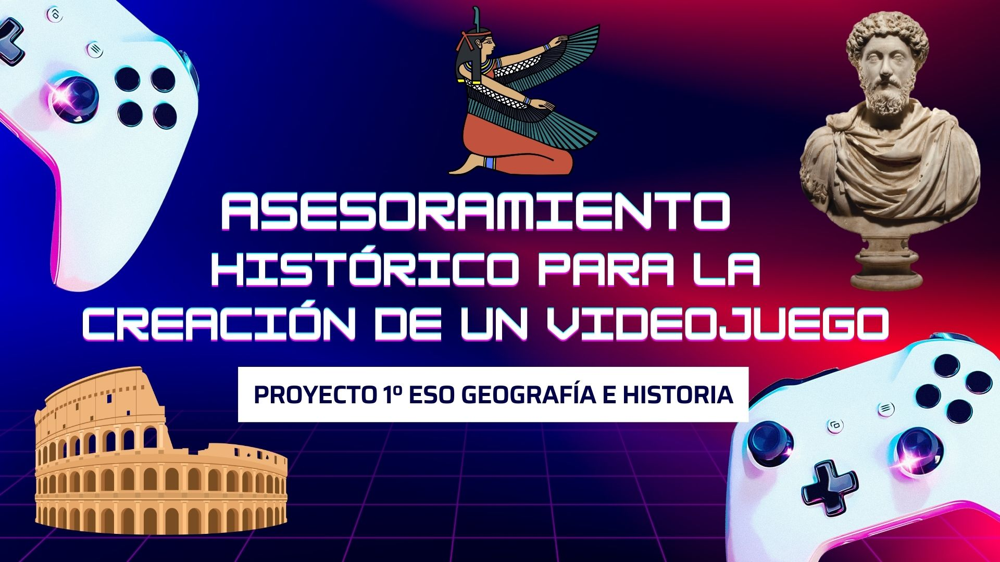
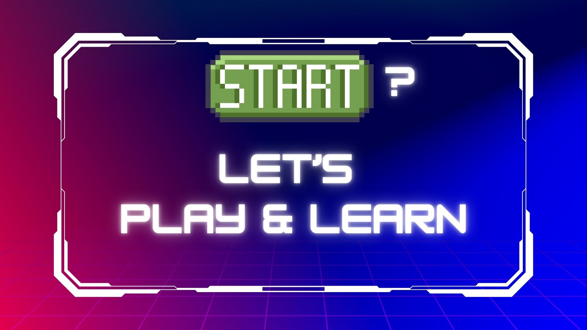

¿EN QUÉ CONSISTE ESTE PROYECTO?

¿EN QUÉ CONSISTE ESTE PROYECTO?
UNA IMPORTANTE DESARROLLADORA DE VIDEOJUEGOS TIENE INTERÉS EN REALIZAR UN VIDEOJUEGO EDUCATIVO CENTRADO EN LA PREHISTORIA Y LA ANTIGÜEDAD. SIN EMBARGO, NO QUIERE QUE EXISTAN INEXACTITUDES HISTÓRICAS. PARA ELLO SE HA PUESTO EN CONTACTO CON NOSOTROS EN BUSCA DE INFORMACIÓN, CONSEJO Y ASESORAMIENTO. NOS PIDEN ADEMÁS QUE, PUESTO QUE ATRAVIESAN UN PERIODO DE FALTA DE CREATIVIDAD, DISEÑEMOS ALGÚN EJEMPLO O ''BETA'' EN EL QUE SE PUEDAN BASAR.
¡¡SU PRÓXIMO ÉXITO DEPENDE DE QUE EL JUEGO REFLEJE AL 100% LA REALIDAD HISTÓRICA!!
PARA RESPONDER A ESTA PETICIÓN VAMOS A CREAR UNA EMPRESA DE ASESORAMIENTO HISTÓRICO:
1. OBJETIVO: CREAR UN DOSSIER DE ASESORAMIENTO HISTÓRICO TRAS UNA INVESTIGACIÓN SOBRE LA PREHISTORIA O LA EDAD ANTIGUA.
2. PRODUCTO FINAL: UNA PRESENTACIÓN TÉCNICA O UNA ''BETA'' QUE SIRVA DE GUÍA A LOS PROGRAMADORES PARA SABER QUÉ CREAR.
¿ESTÁIS LISTOS/AS?
